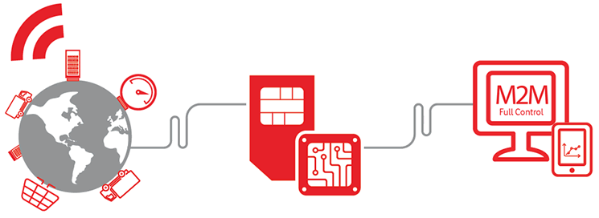

The Athens Affair
Η ΥΠΟΘΕΣΗ
Στα έτη 2004-2005 έλαβε χώρα στην Ελλάδα ένα από τα σημαντικότερα τηλεπικοινωνιακά σκάνδαλα του κόσμου. Δεκάδες ήταν τα στελέχη και οι προσωπικότητες του Ελληνικού κράτους, και όχι μόνο, που υπέπεσαν στις παρακολουθήσεις της τότε εξαιρετικά έμπειρης ομάδας προγραμματιστών που εισέβαλαν στο τηλεπικοινωνιακό δίκτυο της Vodafone. Η εξέλιξη της υπόθεσης έδειξε πως η αντιμετώπιση των γεγονότων έγινε χωρίς την απαραίτητη σοβαρότητα και πως τα μέτρα ασφαλείας που προϋπήρχαν ήταν ισχνά.
ΤΕΧΝΙΚΑ ΚΑΙ ΔΙΑΔΙΚΑΣΤΙΚΑ ΖΗΤΗΜΑΤΑ
Η επίθεση και παρακολούθηση, μεγάλου αριθμού γραμμών, έγινε με την βοήθεια κακόβουλου λογισμικού το οποίο υιοθετούσε τα χαρακτηριστικά ενός rootkit λογισμικού, που κρύβει ενεργά την παρουσία του από τους διαχειριστές καθώς και από τους ελέγχους του ίδιου του συστήματος. Το πρώτο ζήτημα που προκύπτει είναι η εγκατάσταση του λογισμικού στα κέντρα μεταγωγής (switching centers) με στόχο την δυσλειτουργία του συστήματος υποστήριξης υποκλοπών (wiretapping features) και εν συνεχεία την πρόσβαση και εκμετάλλευση του. Πιο συγκεκριμένα, το κακόβουλο αυτό λογισμικό βρέθηκε εγκατεστημένο σε 4 μεταγωγούς του δικτύου της Vodafone Hellas, όπου δημιουργούσε ένα παράλληλο, αντίγραφο, ρεύμα ψηφιοποιημένων ήχων (parallel streams of digitized voice) το οποίο στην συνέχεια είτε κατέγραφαν είτε αποθήκευαν. Τα μεταγωγικά κέντρα της Vodafone ήταν συνδεδεμένα με τον τηλεπικοινωνιακό υπολογιστή μεταγωγής της Ericsson, ΑΧΕ, όπου για την υπόθεση αξίζει να σημειωθεί ότι αναπτύχθηκε με την υποστήριξη της Ελληνικής εταιρείας λογισμικού IntraSoft. Ο κεντρικός επεξεργαστής του υπολογιστή αυτού δημιουργεί τις τηλεφωνικές συνδέσεις και ένας διαχειριστικός επεξεργαστής αποτυπώνει αρχεία καταγραφής (log files) στο σύστημα. Επίσης, ο υπολογιστής AXE, περιλαμβάνει ένα σύστημα διαχείρισης υποκλοπών (IMS), το οποίο δεν ήταν εγκατεστημένο στην περίπτωση της Vodafone Hellas, καθώς και ένα σύστημα απομακρυσμένου ελέγχου RMS, το οποίο βοήθησε τους επιτιθέμενους να δημιουργούν αντίγραφα των επικοινωνιών. Ταυτόχρονα, είχαν εγκατασταθεί συστήματα τα οποία απενεργοποιούσαν αρχεία καταγραφής και απέτρεπαν τους διαχειριστές να εντοπίσουν τις ενέργειες του λογισμικού που είχαν προσθέσει και με αυτόν τον τρόπο μπορούσαν να το ενημερώνουν και να το διαχειρίζονται. Για ακόμα περισσότερη μυστικότητα το εγκατεστημένο λογισμικό αποθήκευε τα παρακολουθούμενα νούμερα σε μια δική του εσωτερική μνήμη. Κατά την διάρκεια μιας ενημέρωσης που συνέπεσε με την προώθηση ορισμένων μηνυμάτων δημιουργήθηκε μια αυτόματη έκθεση αποτυχίας (failure report) εκθέτοντας τους εισβολείς οι οποιοι δεν μπορούσαν να κρύψουν την ύπαρξή τους από τους διαχειριστές. Από εκείνη την στιγμή και μετά, την επίθεση ανέλαβαν να διαλευκάνουν διάφορα κλιμάκια ασφαλείας και ελέγχου από το ελληνικό κράτος καθώς και από τις εμπλεκόμενες εταιρείες, Vodafone και Ericson. Εκ του αποτελέσματος συμπεραίνουμε πως οι παραπάνω έπραξαν βεβιασμένα βοηθώντας τους επιτιθέμενους να καλύψουν τα ίχνη τους οδηγούμενοι σε ενέργειες, όπως η διαγραφή των αρχείων καταγραφής, των βιβλίων επισκεπτών στα κέντρα μεταγωγής καθώς και τη διαγραφή μολυσμένων κομματιών του λογισμικού, αποτρέποντας την μελλοντική ανάκτηση των στοιχείων για έρευνα της υπόθεσης.